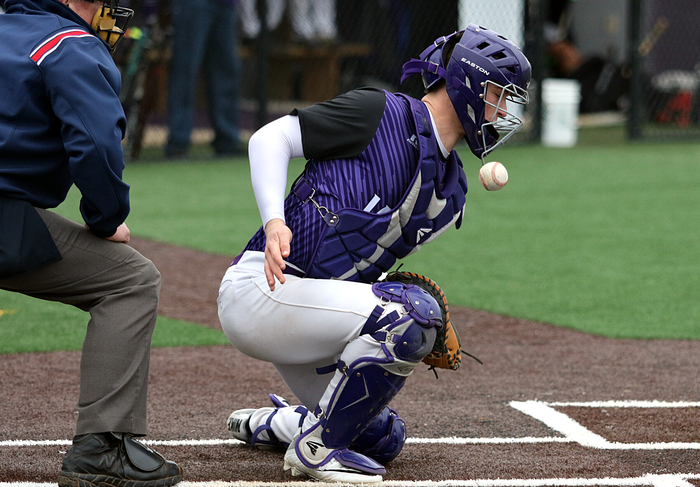
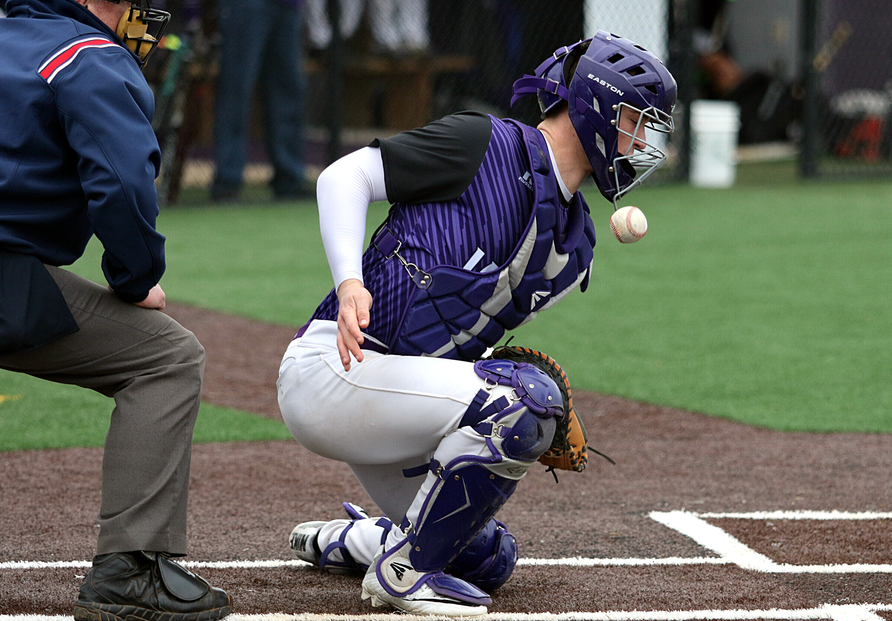

Η μπάλα πρέπει να περάσει από ένα συγκεκριμένο νοητό ορθογώνιο, την Ζώνη
Ρίψης (strike zone) που ορίζεται πάνω από την Αρχική Βάση (Home Plate) «δίνοντας ευκαιρία» στον
Ροπαλοφόρο να την χτυπήσει - αλλιώς είναι λάθος του Ρίπτη και καλείται Μπολ (ball). Η αποτυχία
του Ροπαλοφόρου να χτυπήσει την μπάλα καλείται Στράικ (strike), σε μια από τις ακόλουθες
περιπτώσεις: α) είτε κυνήγησε μια μπαλιά και αστόχησε, β) είτε την χτύπησε φάουλ (foul) δηλ. έξω
από τον χώρο που η μπάλα παίζεται, γ) είτε η μπάλα πέρασε από την Ζώνη Ρίψης (ευκαιρία για
χτύπημα) και αυτός δεν έκανε τίποτα.

Υπάρχει και μια εξαιρετική περίπτωση (δ), όταν από πρόθεση ο Ρίπτης
χτυπήσει με την μπάλα τον Ροπαλόφορο ή η μπάλα έρθει κατά το σώμα του (εκ προθέσεως). Τότε αυτό
χρεώνεται Στράικ από τον κεντρικό διαιτητή.
Σκοπός της Επίθεσης: Ο Ροπαλοφόρος να χτυπήσει την μπάλα «δυνατά ή τεχνικά» ώστε να δώσει
«χρόνο» στους δρομείς του (runners) στις βάσεις αλλά και στον εαυτό του, να προωθηθούν κυκλικά
στις βάσεις. Έτσι, μέχρι η άμυνα να επιστρέψει την μπάλα, οι δρομείς να περάσουν από όλες τις
βάσεις και να επιστρέψουν πίσω στην αρχική κερδίζοντας έναν Πόντο (run) ή τουλάχιστον να σωθούν
σε μια βάση όπου είναι ασφαλείς.Σκοπός της Άμυνας: να επιστρέψει την μπάλα γρήγορα στον
εσωτερικό χώρο (infield) και να εμποδίσει τους γύρους της επίθεσης, «βγάζοντας Άουτ» (out -
εκτός φάσης), τον Ροπαλοφόρο και τους άλλους δρομείς στις βάσεις. Ο Ροπαλοφόρος είναι άουτ σε
μια από τις ακόλουθες περιπτώσεις: α) χρεωθεί 3 Strikes, β) χτυπήσει την μπάλα και αφού αυτή
σκάσει στο έδαφος, η άμυνα να καταφέρει να την πιάσει και να την πετάξει σε αμυντικό στην 1η
βάση. Το παιχνίδι στην 1η βάση καλείται υποχρεωτικό (force) και στόχος της άμυνας είναι να
πατήσει αμυντικός που έχει στην κατοχή του την μπάλα την 1η βάση πριν την πατήσει ο
Ροπαλοφόρος/Δρομέας μετά το χτύπημα που ο ίδιος έκανε.
Οι δρομείς είναι άουτ αν τους ακουμπήσει αμυντικός με το γάντι (μπάλα), ενώ
αυτοί δεν πατάνε εκείνη την στιγμή σε κάποια βάση.
Ένας επιθετικός προσπαθεί να κατακτήσει όσο το δυνατόν περισσότερες βάσεις (κύκλος) χωρίς να τον
βγάλουν άουτ. Ασφαλής (safe), είναι μόνο όταν ακουμπάει μια βάση. Έτσι η μπάλα επιστρέφει στον
ρίπτη για να μονομαχήσει με τον επόμενο ροπαλοφόρο.

 
